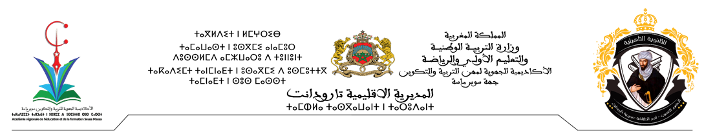
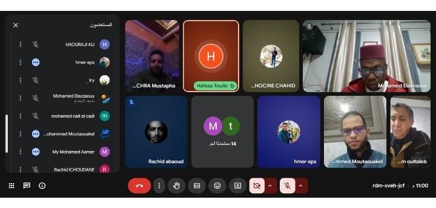
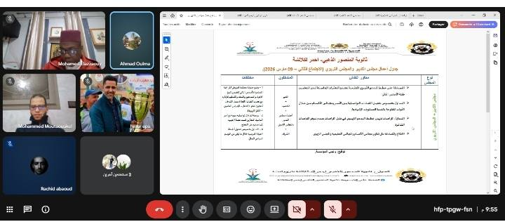

المرجع
المرسوم رقم 2.24.140 الصادر في 13 شعبان 1423 (23 فبراير 2024) الخاص بالنظام الأساسي الخاص بموظفي الوزارة بالتربية الوطنية.
المقرر الوزاري رقم 051.25 لوزير التربية الوطنية والتكوين المهني والتعليم العالي والبحث العلمي بشأن تنظيم السنة الدراسية 2025/2026 بتاريخ 03/07/2025.
المذكرة الداخلية رقم 16 بشأن عقد الاجتماع الثاني لمجلس التدبير والمجلس التربوي.
انسجاما مع منطوق المراجع أعلاه واستثمارا لمحصلة الأسدس الأول من الموسم الحالي على مستوى التدبير الإداري والتربوي والمالي وكذا النتائج المحصلة بالسلكين معا، وتنزيلا لتوصيات السيد المدير الإقليمي بخصوص أجرأة اللقاءات التواصلية والتنسيقية مع مختلف المجالس التقنية داخل المؤسسة وكذا الشركاء، انعقد يومه الاثنين 09 مارس 2026 بثانوية المنصور الذهبي التأهيلية – أحمر لكلاشة اجتماع – عن بعد عن طريق تقنية جوجل ميت – لمجلسي التدبير والتربوي.
وقد استهل الاجتماع بكلمة افتتاحية لرئيس المؤسسة رحب فيها بالحضور كل باسمه وصفته، مهنئا كل النساء العاملات بالمؤسسة ومن خلالهن نساء العالم باليوم العالمي للمرأة الذي يصادف الثامن من مارس من كل سنة، متمنيا لهن مزيدا من العطاء والتألق في عملهن وفي حياتهن الشخصية.
كما هنأ الجميع بهذا الشهر الفضيل، شاكرا كافة المتدخلين على الالتزام المسؤول، ومستعرضا السياق الذي يندرج فيه هذا الاجتماع، واضعا إياه في إطاره القانوني المؤطر له، ومنوها بإدراج تكنولوجيا المعلوميات ليس فقط في التدريس بل كذلك في التدبير، خاصة في ظل إكراه المكان والزمان، مثمنا الدور التقني الذي يقوم به الأستاذ رشيد ابعوض في هذا الباب.
وبعد التذكير ببرنامج العمل، فتح السيد المدير باب النقاش حول مختلف النقط المدرجة، بعد أن نوه بالإنجازات التي تعرفها المؤسسة، شاكرا كل المتدخلين من مديرية إقليمية وشركاء وكافة الفاعلين، خاصة جمعية آباء وأمهات التلاميذ الذين أثنى على مجهوداتهم الجبارة المبذولة في سبيل تجويد الفضاء والأداء التربويين على مستوى المؤسسة.


